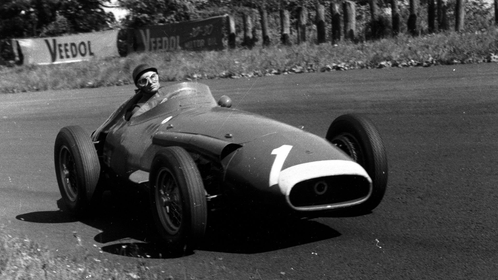
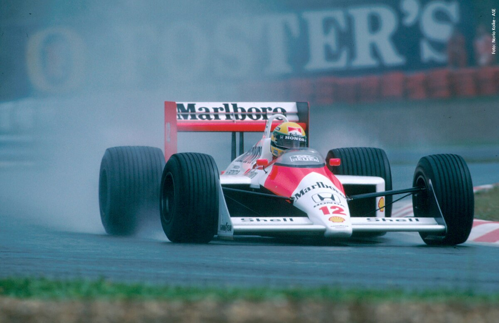

La Fórmula 1, conocida comúnmente como F1, es la máxima categoría del automovilismo deportivo internacional.
Esta emocionante disciplina combina la velocidad, la tecnología de vanguardia y la destreza de los pilotos en un espectáculo que ha cautivado a millones de fanáticos en todo el mundo
Esta emocionante disciplina combina la velocidad, la tecnología de vanguardia y la destreza de los pilotos en un espectáculo que ha cautivado a millones de fanáticos en todo el mundo
La historia de la Fórmula 1 se remonta a la década de 1950,
cuando la Federación Internacional del Automóvil (FIA) estableció un campeonato mundial de carreras de automóviles de fórmula como la máxima categoría en el deporte del motor.
El primer Campeonato Mundial de Fórmula 1 se celebró en 1950, con una emocionante carrera en el circuito de Silverstone, en el Reino Unido.
cuando la Federación Internacional del Automóvil (FIA) estableció un campeonato mundial de carreras de automóviles de fórmula como la máxima categoría en el deporte del motor.
El primer Campeonato Mundial de Fórmula 1 se celebró en 1950, con una emocionante carrera en el circuito de Silverstone, en el Reino Unido.

Desde entonces, la Fórmula 1 ha crecido en popularidad y prestigio, convirtiéndose en uno de los eventos deportivos más seguidos y lucrativos del mundo.
Con un calendario de carreras que abarca todo el globo, desde Europa hasta Asia, Oceanía, América y Oriente Medio,
la F1 ofrece un escenario global para que los mejores pilotos, equipos y fabricantes de automóviles compitan por la gloria en cada carrera.
Con un calendario de carreras que abarca todo el globo, desde Europa hasta Asia, Oceanía, América y Oriente Medio,
la F1 ofrece un escenario global para que los mejores pilotos, equipos y fabricantes de automóviles compitan por la gloria en cada carrera.
La Fórmula 1 es conocida por su tecnología innovadora, que impulsa a los automóviles a velocidades vertiginosas y permite a los pilotos desafiar los límites de la física en cada curva y recta.
Los monoplazas de F1 son auténticas maravillas de la ingeniería, diseñados para ofrecer el máximo rendimiento aerodinámico, velocidad y agarre en la pista.
Los monoplazas de F1 son auténticas maravillas de la ingeniería, diseñados para ofrecer el máximo rendimiento aerodinámico, velocidad y agarre en la pista.
Momentos de Gloria de la Formula 1
Años 50 y 60:
 Durante esta época, pilotos como Juan Manuel Fangio y Stirling Moss dominaron las pistas.
Fangio ganó cinco campeonatos mundiales, estableciendo un récord que tardaría décadas en ser igualado.
Fangio ganó cinco campeonatos mundiales, estableciendo un récord que tardaría décadas en ser igualado.
También se destacan pilotos como Alberto Ascari y Jim Clark,
quienes dejaron su huella en la historia de la F1 con su talento y determinación.
quienes dejaron su huella en la historia de la F1 con su talento y determinación.
La era de los "Cinco Grandes"
En la década de 1980, surgieron pilotos como Alain Prost y Ayrton Senna,
cuya rivalidad en la pista se convirtió en una de las más intensas
cuya rivalidad en la pista se convirtió en una de las más intensas
y legendarias de la historia de la F1.
Entre los dos acumularon varios campeonatos mundiales y dejaron un legado imborrable en el deporte.
Entre los dos acumularon varios campeonatos mundiales y dejaron un legado imborrable en el deporte.